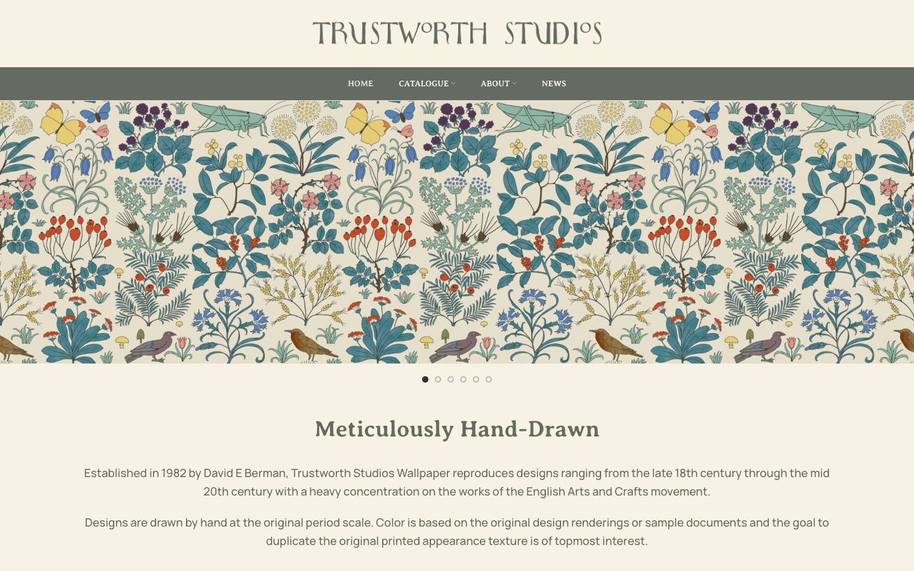

References / Website / 362
Trustworth Studios website
A maker of Arts and Crafts reproduction wallpapers, with a Voysey-style lettered name on cream and a slideshow of its papers.
- Source
- trustworth.com
- Creator
- Trustworth Studios
- Style
- Arts and Crafts (agent-proposed, not yet reviewed by a person)
- Moods
- Botanical, handmade, calm
- Evidence
- Captured with
tools/capture.mjs(headless Chrome, 1440 × 900) on 28 September 2026 and inspected. The screenshot shows the first viewport; the measurement covers up to four screens. - Reviewed
- Rights
- Third-party work, stored with credit for commentary. License: unverified. Rights policy
Observed
- The wordmark “TRUSTWORTH STUDIOS” is in grey-green hand-drawn capitals with small raised O letters, on a cream ground.
- A grey-green bar holds small white serif capitals for the navigation.
- A full-width slideshow shows a wallpaper of flat, outlined wild plants, berries, butterflies, a grasshopper, and birds in teal, blue, red, and yellow on a pale cream ground.
- “Meticulously Hand-Drawn” is set in a grey-green serif, above centred sans-serif text.
Why it belongs
The site sells reproductions of the style, so the pattern is product photography. The wordmark and palette are the site’s own use of the style.
Measured: square corners, no shadows, accent chroma 0.50, and uppercase share 0.23 from the navigation.
Borrow
Use a cream page ground and a grey-green bar as a quiet frame for a colourful botanical pattern.
Measured
Machine-extracted by tools/extract-traits.js on . Full measurement.
- Type families
- Manrope (92%), Averia Serif Libre (8%)
- Type scale ratio
- 2
- Median radius
- 0 px
- Mean chroma
- 0.06
- Palette
- #f8f2e4 60%
- #656b61 35%
- #ffffff 4%
- #333333 1%
- #dfab5f 0%

